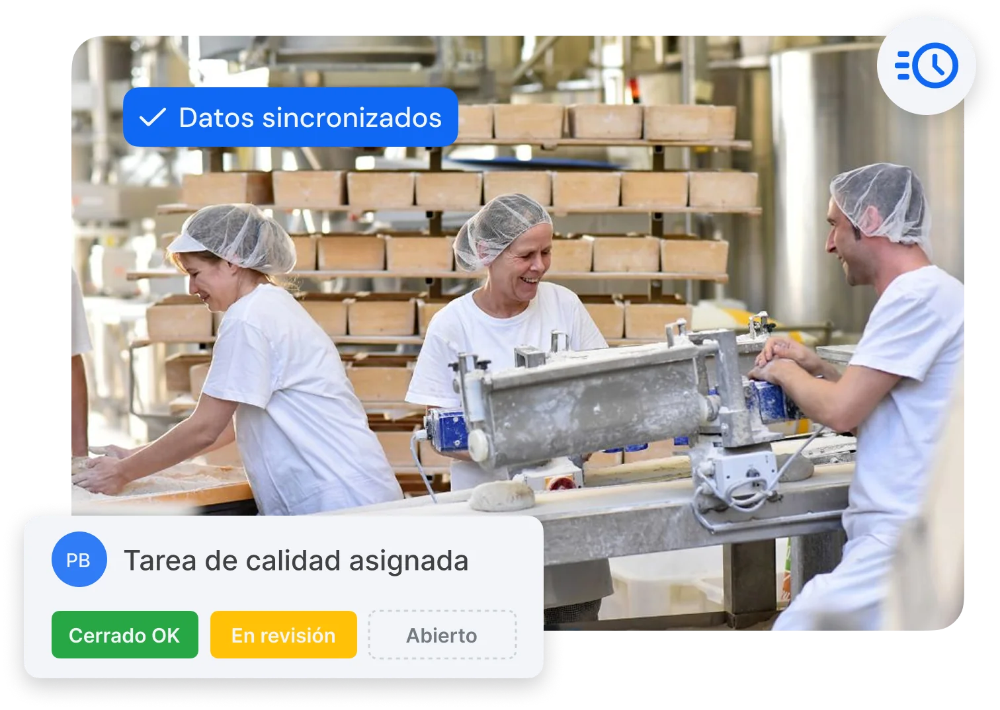
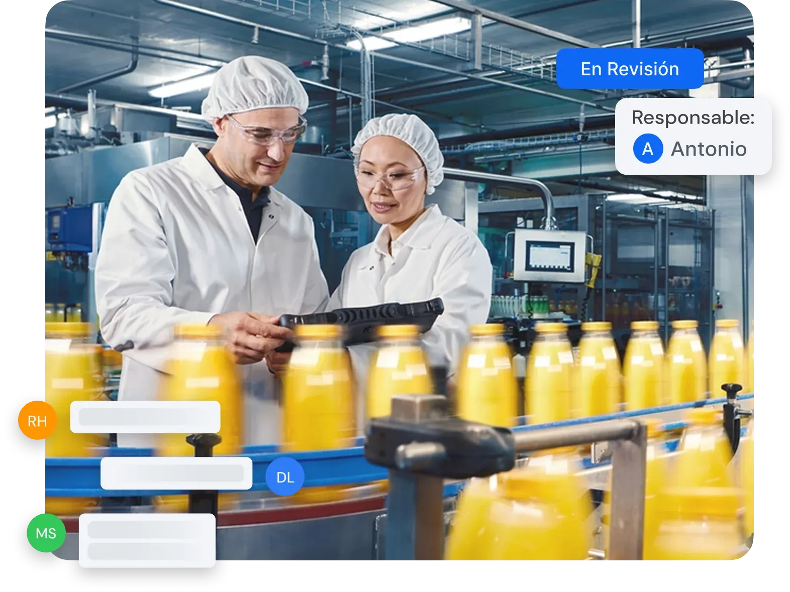

Solved agiliza las operaciones, conecta departamentos y garantiza el cumplimiento de calidad desde el primer día.
Solicita tu demo personalizada
Las operaciones en planta requieren agilidad, coordinación y datos fiables. Sin una solución digital útil y adaptada a la operativa diaria, los procesos se vuelven lentos, propensos a errores y difíciles de auditar.
Los registros en papel no se revisan a tiempo, lo que genera retrasos en la toma de decisiones.
Las incidencias se comunican de forma informal, sin trazabilidad ni responsables definidos.
Los controles de limpieza y de puntos críticos (CCPs) carecen de evidencia digital de ejecución.
Por otro lado, la preparación de auditorías resulta compleja y dispersa, basada en múltiples documentos.
Asimismo, la formación operativa depende demasiado del conocimiento de personas clave.
Con Solved centralizas la información operativa de planta: qué ocurre, cuándo ocurre y quién lo hace. Todo de forma digital, accesible y trazable.
Gestión rápida y trazable de incidencias, con responsables asignados.
Comunicación fluida entre calidad, producción y mantenimiento.
Formación práctica integrada en los registros, sin necesidad de repetir procesos.
Auditorías más simples, con toda la documentación en un solo lugar.
Generación de documentos listos en un click: reclamaciones de proveedores, reportes, …



Sí. Digitaliza el APPCC y sus prerrequisitos, con registros trazables y siempre disponibles para auditorías e inspecciones.
Sí. Mantiene tus registros de calidad y seguridad alimentaria actualizados y accesibles, facilitando las certificaciones.
Sí. Registra controles, lotes y verificaciones para garantizar la trazabilidad y el cumplimiento en todo el proceso.
Sí. Tu equipo registra todo desde móvil o tablet, eliminando el papeleo y los errores de transcripción.